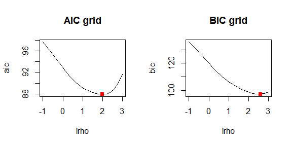
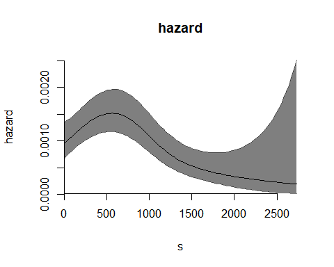
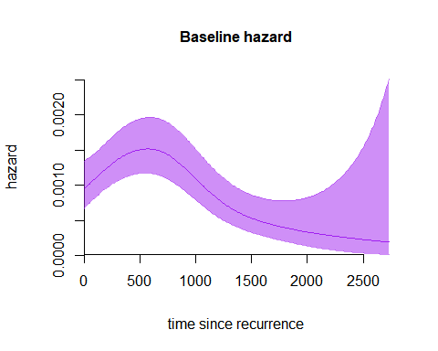
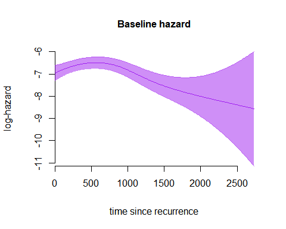
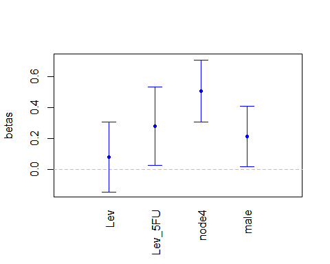

Disclaimer: the current version of the package and of this vignette is a work-in-progress! Details might change with future updates and this vignette will be updated consequently.
We assume that the reader of this vignette has some familiarity with the \(P\)-splines model for the hazard, and with the basic functions of the package introduced in the vignette Introduction to TwoTimeScales.
This vignette demonstrates in details how to use the package
TwoTimeScales to estimate a smooth hazard model with one
time scale, and how to plot the estimates. We use the dataset
reccolon2ts included in the package, and we analyse
mortality after recurrence of the colon cancer, over time since
recurrence. For an overview of the data use:
help(reccolon2ts).
Data preparation
The first step of the analysis, is data preparation. Data are in wide
format, with one row for each patient. To estimate a \(P\)-spline model for the hazard we need to
bin the individual data, that is exposure times and event counts, into
many small bins of equal size, that cover the whole range of values for
the time scale. Data preparation involves the construction of the bins
and the actual binning of the data. Both steps are implemented and
performed by the function prepare_data(), which requires as
inputs the individual data vectors and the desired specification for the
bins. The function returns an object of type data2ts.The
print method can be used to analyse the structure of the
resulting object.
First, we show how the function works with minimal input (that is, by using the default values for any optional parameter):
dt1ts <- prepare_data(s_out = reccolon2ts$timesr,
events = reccolon2ts$status,
ds = 30)
#> `s_in = NULL`. I will use `s_in = 0` for all observations.
str(dt1ts)
#> List of 2
#> $ bins :List of 3
#> ..$ bins_s: num [1:92] 0 30 60 90 120 150 180 210 240 270 ...
#> ..$ mids : num [1:91] 15 45 75 105 135 165 195 225 255 285 ...
#> ..$ ns : int 91
#> $ bindata:List of 2
#> ..$ r: num [1:91] 13674 13070 12474 12002 11534 ...
#> ..$ y: num [1:91] 14 24 16 11 24 22 20 10 24 26 ...
#> - attr(*, "class")= chr "data2ts"
print(dt1ts)
#> An object of class 'data2ts'
#>
#> Data:
#> List of 2
#> $ bins :List of 3
#> $ bindata:List of 2
#> - attr(*, "class")= chr "data2ts"
#> NULL
#>
#> Range covered by the bins:
#> $bins_s
#> [1] 0 2730
#>
#>
#> Number of bins:
#> $ns
#> [1] 91
#>
#>
#> Overview of the binned data:
#> [1] "Total exposure time: 246018"
#>
#> [1] "Total number of events: 409"The function requires as minimal inputs only a vector of exit times
(s_out), a vector of event’s indicators
(events) and the desired bins’ size (ds). The
object dt1ts is a list with two elements. The first element
is a list of bins (bins_s) with their midpoints
(mids) and the total number of bins (ns). The
second element of the list is another list with the data binned, a
vector of exposure times called r and a vector of counts of
events y.
We notice that the calling generated the message
s_in = NULL. I will use s_in = 0 for all observations.;
this message is informing the user that a vector of entry times was not
provided. It is assumed that the entry times are not left truncated
(everyone is observed from the beginning of the process), and
considering s_in = 0 is therefore correct. As explained in
the introductory vignette, we included some artificial left truncated
times for the entry into the risk set. In fact, when we use the variable
that includes left truncation, the message disappears:
dt1ts_lt <- prepare_data(s_in = reccolon2ts$entrys,
s_out = reccolon2ts$timesr,
events = reccolon2ts$status,
ds = 30)Without specifying additional inputs, the constructions of the bins
is done by covering the minimum range of values for the time scale, with
bins of desired size ds. We can change the width of the
bins by changing the argument ds. For example, the
following code builds one bin each 90 days, approximately 3 months. As
consequence, the number of bins is about 3 times less than in the
previous case.
dt1ts_lt2 <- prepare_data(s_in = reccolon2ts$entrys,
s_out = reccolon2ts$timesr,
events = reccolon2ts$status,
ds = 90)
dt1ts_lt2$bins$ns
#> [1] 31It is also possible to specify minimum and maximum values for the bins. This option can be helpful when, for example, the event times are left-truncated but it is still desirable to have bins starting at 0.
range(reccolon2ts$timesr)
#> [1] 3 2725
dt1ts_2 <- prepare_data(s_in = reccolon2ts$entrys,
s_out = reccolon2ts$timesr,
events = reccolon2ts$status,
ds = 30, min_s = 0, max_s = 3000)
str(dt1ts_2)
#> List of 2
#> $ bins :List of 3
#> ..$ bins_s: num [1:101] 0 30 60 90 120 150 180 210 240 270 ...
#> ..$ mids : num [1:100] 15 45 75 105 135 165 195 225 255 285 ...
#> ..$ ns : int 100
#> $ bindata:List of 2
#> ..$ r: num [1:100] 12613 12322 11793 11399 10969 ...
#> ..$ y: num [1:100] 14 24 16 11 24 22 20 10 24 26 ...
#> - attr(*, "class")= chr "data2ts"Now 100 bins have been created, spanning the range from 0 days to 3000 days of follow-up.
When the aim of the analysis is to estimate a proportional hazard
model, a different structure of the data is required (Carollo et al. (2023)). In particular, when only
one time scale is considered, we need to create a matrix of exposure
times R with dimension n (number of
individuals in the data) by ns (number of bins). Similarly
for the matrix of event counts. The function prepare_data()
returns data with this structure by specifying the optional input
individual = TRUE. It is possible, and recommended, to
provide the covariates that one wishes to use in the PH model in the
extra argument covs. The function will take care of the
preparation of the regression matrix Z. However, if
desired, this can also be prepared externally (in which case a warning
will be returned).
covs <- subset(reccolon2ts, select = c("rx", "node4", "sex"))
dt1ts_cov <- prepare_data(s_in = reccolon2ts$entrys,
s_out = reccolon2ts$timesr,
events = reccolon2ts$status,
ds = 30,
individual = TRUE,
covs = covs)
print(dt1ts_cov)
#> An object of class 'data2ts'
#>
#> Data:
#> List of 2
#> $ bins :List of 3
#> $ bindata:List of 3
#> - attr(*, "class")= chr "data2ts"
#> NULL
#>
#> Range covered by the bins:
#> $bins_s
#> [1] 0 2730
#>
#>
#> Number of bins:
#> $ns
#> [1] 91
#>
#>
#> Overview of the binned data:
#> [1] "Total exposure time: 236006"
#>
#> [1] "Total number of events: 409"
#>
#> Covariates:
#> [1] "Lev" "Lev+5FU" "node4" "male"From print(dt1ts_cov), we see that 4 covariates are
included in the Z regression matrix. The variable "rx"
includes 3 categories, and it is therefore represented in the regression
matrix by two dummy variables ("Lev" and
"Lev+5FU").
Estimation
First, we show how to estimate a model without covariates. The
proportional hazard model is introduced in a second step. The function
that estimates the model is fit1ts(), that is a wrap around
several other functions, performing the estimation. The estimation is
done in two steps: First, given a set of values for the smoothing
parameter, or one single starting value, a search for the model with
minimum AIC (or BIC) is performed. Once the model with minimum AIC (or
BIC) is identified, the optimal smoothing parameter is selected and the
optimal model is finally estimated.
For details of each argument of fit1ts() we refer to the
manual or the function documentation, which can be accessed by
help("fit1ts"). Here, we show how to modify the different
arguments to estimate the one time scale model in different ways.
The only required argument is data1ts, which is an
object returned by the function prepare_data(), as we have
seen in the previous section. When this argument, and no other argument
is passed to fit1ts(), estimation is performed with all the
default options. In most scenarios, the user will want to use
prepare_data() to perform data preparation and then
directly pass the output of prepare_data() to
fit1ts(). However, if the available data are already
aggregated into vectors of event’s counts and exposure times, the user
can pass these as arguments to fit1ts(), to y
and r respectively. In this case is necessary to provide
values for bins too, and it is important that all three
arguments are provided and that the length of y,
r and bins$mids are the same.
First, we only pass as argument the object dt1ts, which
was created before. Then, we show, only as illustration, how the same
estimates of the \(\alpha\) are
obtained when we pass the arguments y, r and
bins, taken from the same object.
# Model 1 - Default parameters (numerical optimization of aic, default param for
# B-splines)
m1 <- fit1ts(data1ts = dt1ts)
# Model 2 - Single data inputs
m2 <- fit1ts(y = dt1ts$bindata$y, r = dt1ts$bindata$r, bins = dt1ts$bins)
table(m1$optimal_model$alpha == m2$optimal_model$alpha)
#>
#> TRUE
#> 13
str(m1)
#> List of 3
#> $ optimal_model :List of 9
#> ..$ alpha : num [1:13, 1] -6.96 -6.57 -6.22 -6.14 -6.28 ...
#> ..$ SE_alpha: num [1:13] 0.3466 0.1197 0.0893 0.0983 0.1221 ...
#> ..$ eta : num [1:91, 1] -6.55 -6.51 -6.48 -6.44 -6.4 ...
#> ..$ H : num [1:13, 1:13] 0.16707 0.0782 0.00508 -0.01083 -0.00517 ...
#> ..$ deviance: num 79.8
#> ..$ ed : num 4.04
#> ..$ aic : num 87.9
#> ..$ bic : num 98.1
#> ..$ Bbases :List of 1
#> .. ..$ Bs: num [1:91, 1:13] 0.1407 0.0971 0.0636 0.0388 0.0215 ...
#> .. .. ..- attr(*, "x")= num [1:91] 15 45 75 105 135 165 195 225 255 285 ...
#> .. .. ..- attr(*, "xl")= num 0
#> .. .. ..- attr(*, "xr")= num 2730
#> .. .. ..- attr(*, "nseg")= num 10
#> .. .. ..- attr(*, "bdeg")= num 3
#> .. .. ..- attr(*, "type")= chr "bbase"
#> $ optimal_logrho: num 1.13
#> $ P_optim : num [1:13, 1:13] 13.4 -26.8 13.4 0 0 ...
#> - attr(*, "class")= chr "haz1ts"The object returned by fit1ts() is of class
"haz1ts". The first element is a list with the results of
the optimal model. The second element is the optimal smoothing parameter
(on the \(\log_{10}\)-scale) and the
last element is the penalty matrix P_optim, incorporating
the optimal value of \(\varrho\).
In the following examples we show how to modify the arguments of the function, to obtain slightly different model’s specification. The results are not shown here, but we encourage the reader to run these examples on their console.
# Model 3 - Change specifications of the B-splines (degree, number of segments
# and range)
m3 <- fit1ts(data1ts = dt1ts,
Bbases_spec = list(bdeg = 2, # quadratic B-splines
nseg_s = 20, # 20 segments
min_s = 0,
max_s = 2730))
# Model 4 - As m3, but change penalty order
m4 <- fit1ts(data1ts = dt1ts,
Bbases_spec = list(bdeg = 2,
nseg_s = 20,
min_s = 0,
max_s = 2730),
pord = 3) # third-degree penalty
# Model 5 - As m3, but change optimization method to grid_search
m5 <- fit1ts(data1ts = dt1ts,
Bbases_spec = list(bdeg = 2,
nseg_s = 20,
min_s = 0,
max_s = 2730),
optim_method = "grid_search") # search for optimal smoothing over grid of values
# Model 6 - As m5, but optimization criterion is "bic" and include grid of
# values for log_10(rho)
m6 <- fit1ts(data1ts = dt1ts,
Bbases_spec = list(bdeg = 2,
nseg_s = 20,
min_s = 0,
max_s = 2730),
optim_method = "grid_search",
optim_criterion = "bic", # use BIC rather than AIC
lrho = seq(-2, 3, by=.2)) # provide grid for log_10(rho)Finally, we demonstrate how to plot the AIC and BIC curves, mark the optimal values of the smoothing parameter, and extract the AIC and BIC vectors after a grid search of the optimal smoothing parameter.
par(mfrow = c(1,2))
m6 <- fit1ts(data1ts = dt1ts,
Bbases_spec = list(bdeg = 2,
nseg_s = 20,
min_s = 0,
max_s = 2730),
optim_method = "grid_search",
optim_criterion = "bic",
lrho = seq(-1, 3, by=.2),
par_gridsearch = list(
plot_aic = T,
plot_bic = T,
mark_optimal = T
))
par(mfrow = c(1,1))
m6.aic <- m6$AIC
m6.bic <- m6$BIC
m6.aic[1:6]; m6.bic[1:6]
#> [1] 97.67005 96.78100 95.81061 94.79922 93.79740 92.84326
#> [1] 135.6309 132.7852 129.7015 126.4681 123.1973 119.9904We notice how, for the same data and over the same grid of \(\log_{10}(\varrho)\) values, the BIC criterion selects a larger smoothing parameter than the AIC. This behavior is well known, as the BIC penalizes differences in neighboring coefficients more strongly than AIC, leading to smoother results.
Finally, we estimate a PH model including the covariates
rx, node4 and sex, and see how to
extract the estimates of the regression parameters \(\beta\)s.
m7 <- fit1ts(data1ts = dt1ts_cov,
Bbases_spec = list(nseg_s = 15,
min_s = 0,
max_s = 2730))
betas <- m7$optimal_model$beta
betas
#> Lev Lev+5FU node4 male
#> 0.07875399 0.27900614 0.50543144 0.21322565In the next section, we will show how to get estimates of the
(log-)hazard curve with one time scale, using the same \(B\)-splines basis as for the estimation, or
evaluating this old basis in a denser grid. We will also see how to
obtain estimates of the hazard ratios, and how all these steps can be
performed jointly and plotted using the function
plot().
Presenting the results of the smooth one time scale hazard model
We will explore several options for the presentation of the results
of the one time scale model, using the last model we estimated in the
previous section, which included four covariates. The object returned by
fit1ts() provides the estimates of both the parameters of
the \(B\)-splines, that is a vector of
\(\hat{\alpha}\) values, and the
estimates of the covariates’ effects, a vector of \(\hat{\beta}\) values. The hazard is
obtained from the \(\hat{\alpha}\) by
multiplying each coefficient to the corresponding \(B\)-spline, summing up the contributions of
each scaled \(B\)-spline in a specific
point and finally exponentiating the result: \[\hat\lambda = \exp\left\{\sum^{n_s}_{k=1}
b_{kl}\alpha_l\right\}.\]
The function get_hazard_1d() returns a vector of
estimates for the (log-)hazard, and the associated standard errors,
given as input the object returned by fit1ts() and,
optionally, a list of specifications for evaluating the \(B\)-splines basis on a new grid. When
applied to a PH model, it returns the baseline hazard.
We show how to provide specifications for the \(B\)-splines and how to use the function
get_hazard_1d(). We will evaluate the \(B\)-splines basis on a finer grid, where
the distance between the bins is of 10 days.
basehaz <- get_hazard_1d(fitted_model = m7,
plot_grid = c("smin" = 0, "smax" = 2730, "ds" = 10))
str(basehaz)
#> List of 7
#> $ new_plot_grid :List of 4
#> ..$ ints: num [1:274] 0 10 20 30 40 50 60 70 80 90 ...
#> ..$ smin: Named num 0
#> .. ..- attr(*, "names")= chr "smin"
#> ..$ smax: Named num 2730
#> .. ..- attr(*, "names")= chr "smax"
#> ..$ ds : Named num 10
#> .. ..- attr(*, "names")= chr "ds"
#> $ hazard : num [1:274, 1] 0.00095 0.000964 0.000978 0.000992 0.001007 ...
#> $ loghazard : num [1:274, 1] -6.96 -6.94 -6.93 -6.92 -6.9 ...
#> $ log10hazard : num [1:274, 1] -3.02 -3.02 -3.01 -3 -3 ...
#> $ SE_hazard : num [1:274, 1] 0.000169 0.000168 0.000166 0.000165 0.000164 ...
#> $ SE_loghazard : num [1:274, 1] 0.178 0.174 0.17 0.166 0.163 ...
#> $ SE_log10hazard: num [1:274, 1] 0.0775 0.0756 0.0738 0.0721 0.0706 ...
range(basehaz$hazard)
#> [1] 0.000191134 0.001517088The calls returns a list with several elements: The new grid for
plotting new_plot_grid, a vector for the hazard values
hazard, a vector for the log-hazard values
loghazard , a vector with the \(log_{10}\)-hazard values
log10hazard and three vectors with the associated standard
errors, respectively SE_hazard, SE_loghazard
ans SE_log10hazard. The hazard ratios and their standard
errors are obtained by calling the function get_hr:
hr <- get_hr(fitted_model = m7)
hr$HR
#> Lev Lev+5FU node4 male
#> 1.081938 1.321815 1.657701 1.237664It is possible to call these two functions independently and to use
the resulting objects to create a plot of the results. However, this is
exactly what is done by the method plot(), implemented for
objects of class "haz1ts".
plot(m7)
This simple call produces, for a PH model, the plot of the baseline hazard curve. Now we interpolate the \(B\)-spline basis on a denser plotting grid, and change other parameters to obtain a nicer plot.
plot(m7,
plot_grid = c("smin" = 0, "smax" = 2730, "ds" = 10),
plot_options= list(
col = "purple",
main = "Baseline hazard",
ylab = "hazard",
xlab = "time since recurrence",
cex_main = 1))
The hazard can also be plotted on the log-scale, by setting the
argument plot_options$loghazard = TRUE:
plot(m7,
plot_grid = c("smin" = 0, "smax" = 2730, "ds" = 10),
plot_options= list(
loghazard = TRUE,
col = "purple",
main = "Baseline hazard",
ylab = "log-hazard",
xlab = "time since recurrence",
cex_main = 1))
We can also plot the covariates’ effects by calling:
plot(m7,
which_plot = "covariates")
This call plots the point estimates for the \(\beta\) parameters with their 95% confidence intervals. Alternatively, we can decide to plot the estimated hazard ratios, with their confidence intervals. There are two options regarding the confidence intervals for the HRs: First, we can use the delta method to find confidence intervals that are symmetric around the HRs estimates. Second, we can exponentiate the confidence intervals for the \(\beta\) parameters, and therefore obtain non-symmetric (but always positive) confidence intervals for the HRs. We show both options here:
par(mfrow = c(1,2),
font.main = 1)
# Option 1: symmetric CIs with delta method
plot(m7,
which_plot = "covariates",
plot_options = list(
HR = T,
symmetric_CI = T,
ylim = c(0.8, 2.1),
main = "HR with symmetric CIs",
cex_main = 1
))
abline(h=1, lty=2, col="grey")
# Option 2: non-symmetric CIs
plot(m7,
which_plot = "covariates",
plot_options = list(
HR = T,
symmetric_CI = F,
ylim = c(0.8, 2.1),
main = "HR with non-symmetric CIs",
cex_main = 1
))
abline(h=1, lty=2, col="grey")
Finally, it is possible to change the level of confidence for the CIs. In the following we show three different levels for the same \(\beta\).
par(mfrow = c(1,3),
font.main = 1)
plot(m7,
which_plot = "covariates",
plot_options = list(
ylim = c(-0.22, 0.8),
main = "95% CIs",
cex_main = 1
))
abline(h=0, lty=2, col="grey")
plot(m7,
which_plot = "covariates",
plot_options = list(
ylim = c(-0.22, 0.8),
confidence = .90,
main = "90% CIs",
cex_main = 1
))
abline(h=0, lty=2, col="grey")
plot(m7,
which_plot = "covariates",
plot_options = list(
ylim = c(-0.22, 0.8),
confidence = .99,
main = "99% CIs",
cex_main = 1
))
abline(h=0, lty=2, col="grey")